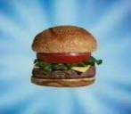

Cangreburger
Receta de La Cangreburger definitiva

Ingredientes
- Carne de Cangrejo
- Pan Hamburguesa
- Lechuga
- Tomate
- Carne de Cangrejo
Procedimiento
- Sazonamos la carne con Sal,Pimienta Blanca y Comino
- Sofreimos la carne en una sarte/parrilla previamente calentada. Mientras tanto cortaremos el tomate y la lechuja
- Una vez dada la vuelta a la carne, le pondremos varias lascas de queso y a ser posible cogeremos la tapa de una olla y la pondremos encima
- Una vez fundido el queso, montaremos nuestra hamburguesa.¡Y a comer!